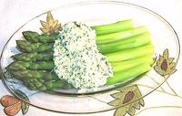

|
Mimosa DressingEuro - American | ||||
| Makes: Effort: Sched: DoAhead: |
(Note-1) ** 45 min Yes |
A simple to make spring dressing particularly good with fresh Asparagus or as a dip with lightly steamed vegetables or even crackers. Great for canapés too. Proportions are touchy so be careful. | |||
|
|
2 ----- 2 1 1 1/2 3 1/4 ----- |
lrg --- T T T T T t --- |
Eggs -- Seasonings Parsley Herb Mix, fresh (2) Lemon Juice Vinegar, Sherry (3) Olive Oil ExtV. Salt ----------- |
Make - (45 min - 20 min work)
|